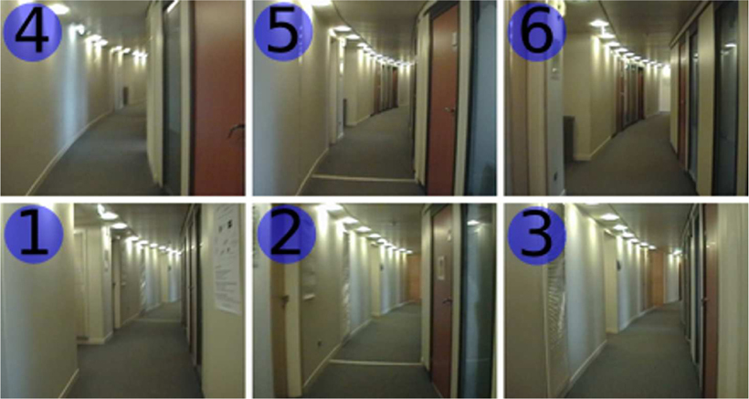

Robust Loop Closing over time
Perceptual Aliasing
Source: Angeli, A.; Filliat, D.; Doncieux, S.; Meyer, J.-A.; , "Fast and Incremental Method for Loop-Closure Detection Using Bags of Visual Words," Robotics, IEEE Transactions on, vol.24, no.5, pp.1027-1037, Oct. 2008
(Use the fourth, Luke!)
Use a spacebar or arrow keys to navigate